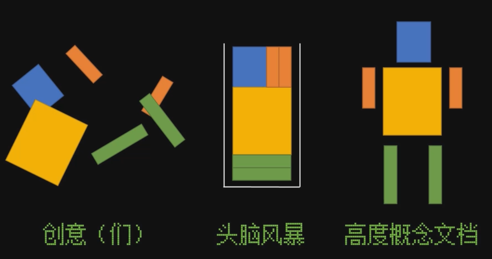
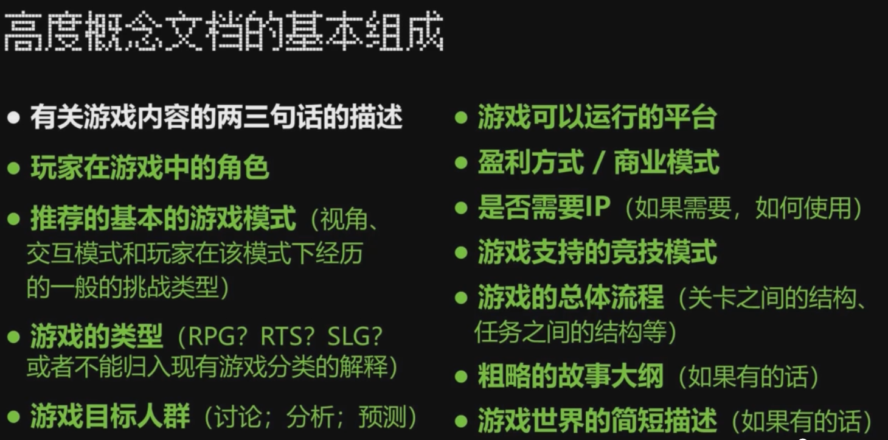
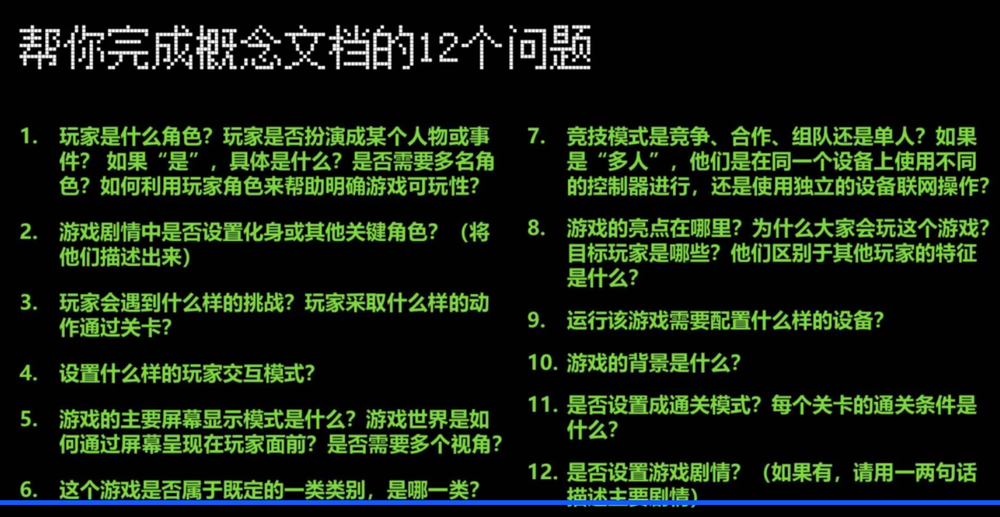

# 创意、头脑风暴、概念文档的关系
创意是凌乱的、头脑风暴是工具，将文档进行整理加工，生成高度概念文档

# 创意
如何获得一个创意？
- 需要大量积累，并日常进行观察和总结
- 一个好的创意和给你带来财富之间还有很大的距离（好的创意只占 5%-10%）
- 创意一定是越多越好，不要吊死在一棵树上
- 记录、扩展、深化，并探索更多的创意
好的创意来源于何处？
- 其他媒体作品：书籍、电影、电视
- 传统八大艺术背后的人性、美、反思
- 游戏被称作第九大艺术
- 模拟人生的灵感就来自建筑模式语言，这并不是一本游戏书（是一本房屋设计怎么影响人们生活方式的书）
- 其他游戏的灵感
- 《电子游戏记录着成长指南》
- 现实的生活 & 想象中的幻想
# 头脑风暴
定义域作用：
- 一种工具
- 全面探索一个设计问题所有可能的答案，尽可能多的构思出理念
- 小组成员思考并互相合作，重视所有人的理念
- 使小组能在什么是重要的事情上达成一致的好方法
- 项目初期使用
基本法则：
- 数量胜过质量：“黄金法则”，竭尽全力构思出尽可能多的理念
- 不要急于评论：自己的、别人的、团队的
- 没有但是：要接着每个人的理念往下说
- 发散思维：不要在乎是不是合理
- 可视化你的理念：帮助获得更多理念的方法
- 组合你的理念：帮助获得更多理念的方法
# 头脑风暴的方法：
理念闪约
概念：
- 集体构思
- 在设计的最开始使用
流程：
- 事前准备：每个人都构思出一个游戏理念，分享给整个集体
- 每个人在纸上用一两句话写下自己的游戏理念
- 集体相互介绍理念，构思一个由各自理念混合而成的游戏理念
- 每一对伙伴把新的理念写出来
- 每人审阅每个新理念并进行投票
- 更重要的是产生更好的理念，不是竞技
问题驱动
概念：
- 以疑问句作为头脑风暴的起源（例如 “我们该怎样……”）
- 或者假设句
流程：
- 10min 内，每人构思尽量多的理念
- 写小纸条
- 牢记数量胜过质量
- 每人向全体介绍理念
- 表述的过程中可以通过结合或根据旧理念产生新的理念
- 投票
- 更重要的是产生更好的理念，不是竞技
# 高度概念文档
基本组成：

根据角色：
- 学生：
- 重要的不是赚钱，而是自我表达，和玩家进行交流
- 定义玩家在游戏中角色是关键
- 如果玩家角色很难描述，那么玩家很可能也会难以把握这个角色，这就意味着游戏概念出现了问题
- 大型发行商工作：
- 选择合适的游戏类型
- 不应让标准类型限制你的创造力，也不要无缘无故混合不同类型的特征
- 定义目标人群
- 发行商 “谁会买这个游戏”
帮你完成高度概念文档的 12 个问题：
